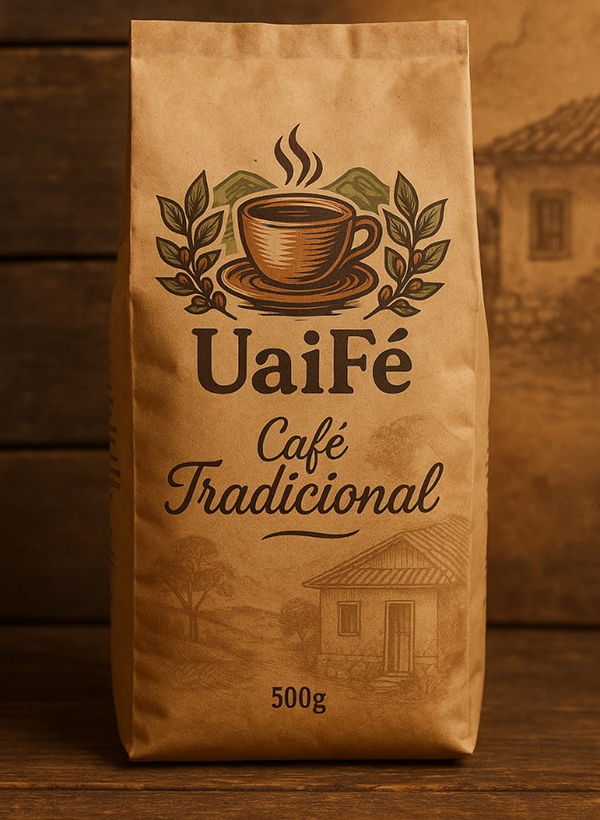

Café Tradicional - 500g
O sabor de minas que abraça o dia-a-diaUma torra equilibrada, com aroma suave e corpo leve. Ideal para aquele cafezinho de toda hora, jeito que o mineiro gosta. Produzido com grãos selecionados das montanhas de Minas Gerais.
- 500g | Torrado e moído
- Grãos selecionados | Produção artesanal